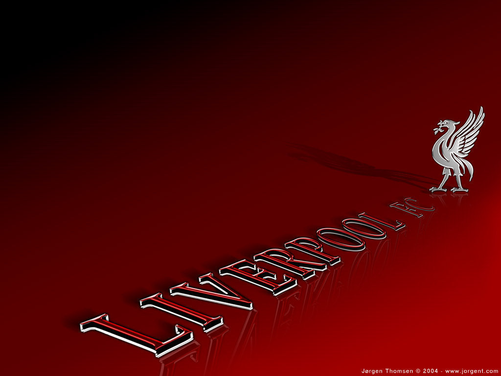
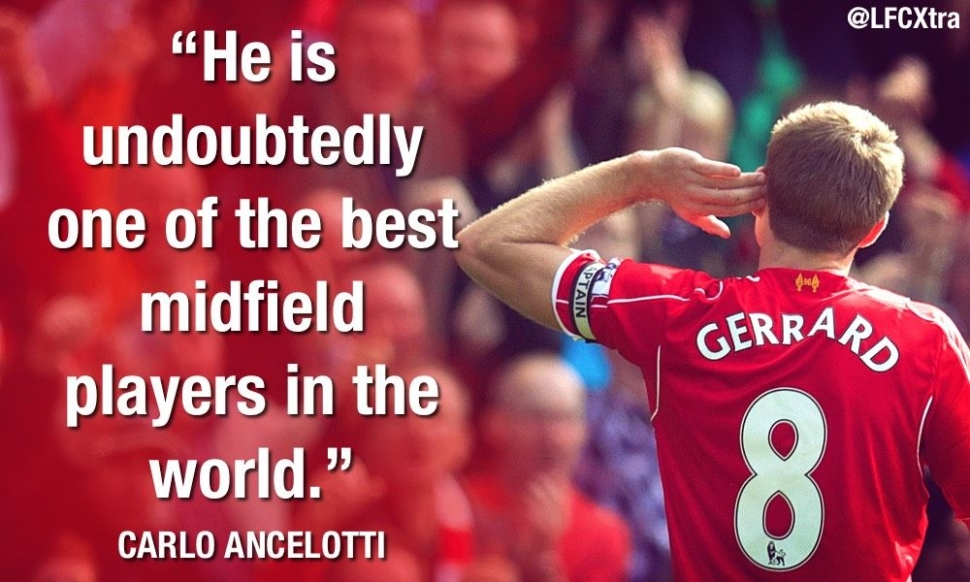

In his autobiography 'Crossing The Line: My Story', released last year, the Barcelona striker provides a revealing insight into his relationship with Steven Gerrard and why he loved the LFC captain from the moment he joined Liverpool FC.
Brendan Rodgers reflects on Liverpool's win over Sunderland, praises Lazar Markovic and Emre Can, while looking ahead to the return of Daniel Sturridge and Raheem Sterling. Here's the key quotes...

After his heroics against AFC Wimbledon in the FA Cup on Monday, Steven Gerrard returns to Premier League action on Saturday with a trip to Sunderland. Here's five reasons why the captain is one of the best ever players to grace the league.
